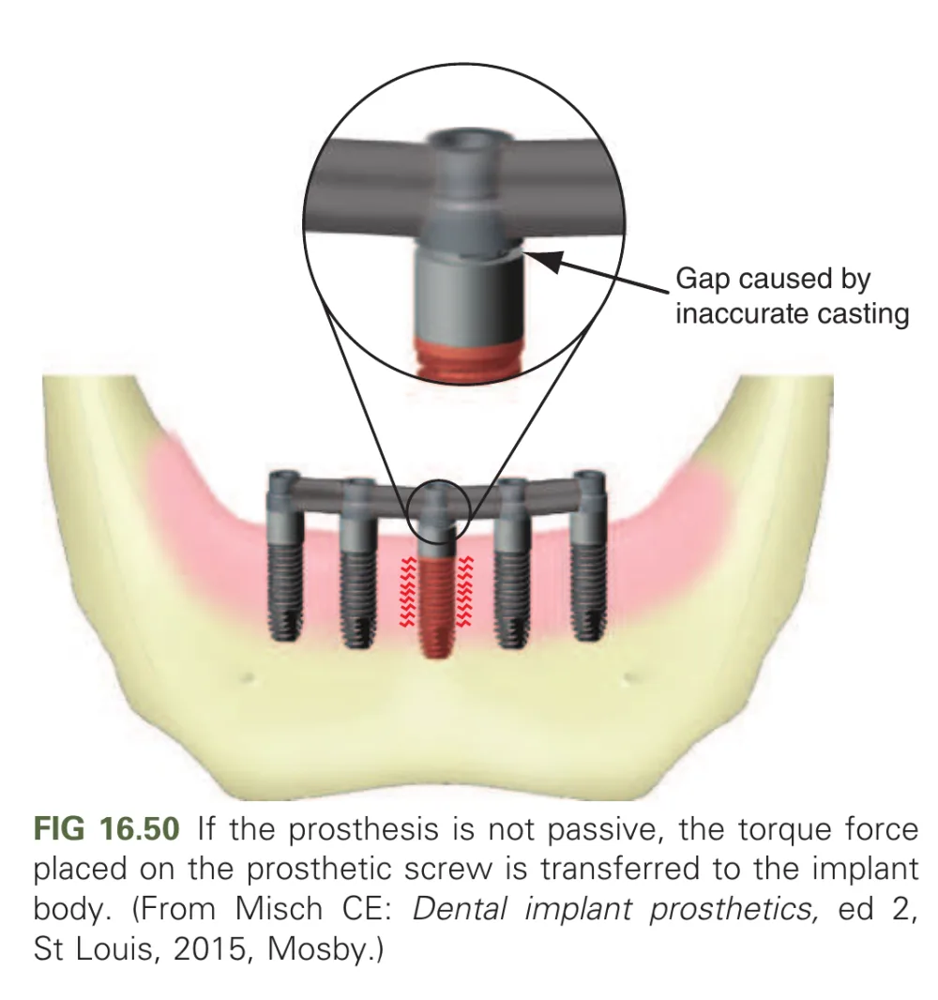
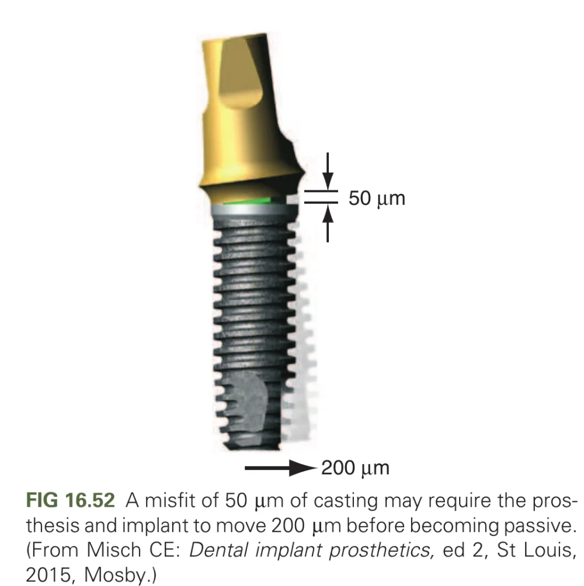

نسخه استخراجشده؛ ترجمه یا تأیید علمی انجام نشده است. وضعیت: captured
بیا با تاریخچهی تعریف شروع کنیم: «فیت پسیو یک پروتز نخست تقریباً ۱۰ میکرومتر میان پروتز و ایمپلنت یا اباتمنت توصیف شد.»
و سپس ادبیات آن را شلتر کرد: «گزارشهای دیگر نشان دادهاند فیتهای مارجینال تا ۱۰۰ میکرومتر بالینی قابلقبولاند، با این قید که شکافهای بزرگتر شانس بیشتری برای کلونیزاسیون باکتریایی و افزایش التهاب اطراف ایمپلنت دارند.»
و اکنون تعریف امروزی، که از عدد به عملکرد رفته است: «تعریف فیت پسیو تکامل یافته و اکنون یک «فیت بالینی قابلقبول که در آن شرایط تنش/کرنش در محدودهی فیزیولوژیک است، بهگونهای که استخوان نابالغ بتواند در پاسخ به بارهای اکلوزالی پس از اتصال فیزیولوژیک بالغ شود و ریمادل کند» است.»
این تغییر تعریف مهم است: از یک عدد میکرومتری به یک شرط بیولوژیک. یعنی پرسش دیگر «شکاف چند میکرون است؟» نیست، بلکه «آیا کرنش حاصل در محدودهای است که استخوان بتواند با آن زندگی کند؟» — و همانطور که در یونیت بارگذاری فوری خواندی، این همان محدودهی سازگاری ریزکرنش است.
و دو نوع عدمانطباق، دو پیامد کاملاً متفاوت دارند:
تفاوت را خوب ببین: عدمانطباق افقی پیچ را خم میکند؛ عدمانطباق عمودی پیچ را خسته میکند. یکی مسئلهی هندسه است و دیگری مسئلهی زمان.
و اکنون تصویر ایدهآل در برابر واقعیت:
«در حالت ایدهآل، وقتی یک پروتز با پیچهای پروتزی (کوپینگ) نگه داشته میشود، ترمیم بهطور پسیو روی اباتمنتها مینشیند و پیچهای پروتزی دو جزء را به هم فیکس میکنند. وقتی پروتز پسیو مینشیند، پیچها نیروی فشاری یا کششی بر اباتمنتها میگذارند، ولی هیچ نیرویی به بدنههای ایمپلنت منتقل نمیشود.»
و اگر پسیو نباشد؟ «نیروی پیچهای پروتزی آنگاه به بدنههای ایمپلنت منتقل میشود.» — این یک جملهی ساده است که کل خطر را در خود دارد: در حالت پسیو، نیرو در پیچ میماند؛ در حالت غیرپسیو، نیرو به استخوان میرسد.
و اکنون تشبیهی بهیادماندنی:
«یک پیچ ترکیبی از سطوح شیبدار و گوهها است و یکی از کارآمدترین طراحیهای ماشینی است. یک نیروی تورک ۲۰ نیوتنسانتیمتر که بر یک پیچ اعمال شود، میتواند دو واگن قطار را حرکت دهد.»
و بلافاصله پیامدش: «همین نیرو وقتی بر یک ریختهگری غیرپسیو اعمال شود، تمایل دارد سوپراستراکچر، استخوان زیرین و اجزای ایمپلنت را تحریف کند.»
و چون نیرو ثابت است: «میتواند خزش بیومکانیکی را وارد سیستم کند، که میتواند مواد و استخوان را خسته کند. یک ایمپلنت بهطور قابلپیشبینی درون استخوان حرکت نمیکند، با این حال تنشهای حفظشده از ریختهگریهای غیرپسیو باید از راه یک فرایند ریمادلینگ استخوان جبران شوند.»
این جمله را دو بار بخوان: ایمپلنت نمیتواند جابهجا شود تا تنش را آزاد کند، پس تنش باید با ریمادلینگ استخوان جبران شود. و اگر کرنش از محدودهی فیزیولوژیک بگذرد، این ریمادلینگ به تحلیل استخوان کرستال میانجامد.

مقیاس واقعی مسئله را یک عدد نشان میدهد:
«در نتیجهی همهی این متغیرها، تحریفهای پروتز ایمپلنت در دامنهی ۲۹۱ تا ۳۵۷ میکرومتر ممکن است در حین ساخت ترمیم مشاهده شود.»
و نتیجهای که از آن میگیرد: «ترمیمهای نهایی پسیو بسیار بعید است وقتی بیش از دو ایمپلنت به هم اسپلینت شوند و پروتزی را با گیر پیچی بهعنوان روش فیکساسیون پشتیبانی کنند.»
و شکل ۱۶٫۵۲ همان عددی را تکرار میکند که در یونیت پیش دیدی: «اگر یک ریختهگری ۵۰ میکرومتر عدمانطباق داشته باشد، ریختهگری و ایمپلنت ممکن است ناچار شوند ۲۰۰ میکرومتر حرکت کنند پیش از آنکه سیستم کاملاً پسیو شود.» و این یعنی «ریسک قابلتوجهی برای ایجاد تحلیل استخوان کرستال، شل شدن پیچهای پروتزی، و شکست ایمپلنت».
و اتیولوژی، که ریشهی مسئله را در یک عبارت میگذارد:
«وقتی پروتز پیچشونده به اباتمنت متصل میشود، هیچ فضایی میان تاج و اباتمنت وجود ندارد. در عوض، یک سیستم فلز-به-فلز با تلورانس صفر برای خطا ساخته میشود.»
«تلورانس صفر برای خطا» کلید کل این درس است. در یک ترمیم سمانی، لایهی سمان یک بافر است که خطاهای کوچک را میبلعد. در ترمیم پیچشونده چنین بافری وجود ندارد — و ترمیمهای پیچشوندهی غیرپسیو میتوانند شرایط کرنش دائمی چندین برابر بزرگتر از پروتزهای سمانی بر سیستم ایمپلنت ایجاد کنند.
و پیامد نهایی: «ریزکرنش اعمالشده بر استخوان ممکن است فراتر از ناحیهی اورلود و به درون ناحیهی پاتولوژیک بیفتد، که در آن ریمادلینگ استخوان با تحلیل کرستال یا حتی شکست ایمپلنت رخ میدهد.» — همان نواحی ریزکرنش که در یونیت بارگذاری فوری خواندی.
و جمعبندی:
«یک ترمیم دندانی پیچشوندهی واقعاً پسیو، ساختنش روی چند ایمپلنت اسپلینتشده عملاً ناممکن است. متغیرهای بسیار زیادی خارج از کنترل پزشک هنگام تلاش برای ساخت پروتز وجود دارد. متأسفانه، این فرایند تلورانس صفر برای خطا را مجاز میداند، و روشهای آزمایشگاهی ممکن است دقت لازم برای چنین نتیجهی دقیقی را نداشته باشند.»
و یک اشتباه رایج در قوس کامل:
«ترمیمهای تمامقوس اغلب با وجود یک متال تِرایاین قابلقبول پسیو نیستند، چون حجم انقباض پرسلن یا آکریلیک ممکن است تحریف ماده ایجاد کرده باشد. انقباض پرسلن و آکریلیک مستقیماً به حجم ماده مربوط است و ممکن است سوپراستراکچر را تحریف کند، حتی اگر سوپراستراکچر در ابتدا پسیو بوده باشد.»
یعنی متال تِرایاین موفق، تضمین نمیکند. فلز در آن لحظه پسیو بود؛ ولی پختن پرسلن روی آن، سازه را دوباره تحریف میکند. و هرچه حجم بیشتر — یعنی هرچه قوس کاملتر — انقباض بیشتر.
و یک نشانهی بالینی که اغلب نادیده گرفته میشود:
«پس از تحویل پروتز، یک اباتمنت یا پیچ پروتز ممکن است میان جلسات شل شود. این معمولاً نشان میدهد که ریختهگری پسیو ننشسته است، ولی علت اغلب نادیده گرفته میشود. در عوض، پیچها دوباره سفت میشوند (اغلب با تورک بیشتر)، و استخوان باید ریمادل کند تا کرنش سیستم ایمپلنت را آزاد کند.»
این یکی از مهمترین هشدارهای بالینی کل ماژول است: شل شدن مکرر پیچ یک نشانه است، نه یک مشکل. سفت کردن دوباره — بهویژه با تورک بیشتر — نشانه را خاموش میکند و علت را تشدید میکند. و بهایش را استخوان کرستال میدهد.
و در پایان، یک عامل مشخص خطا در آزمایشگاه: کوپینگهای ترنسفر غیرمستقیم.
«استفاده از کوپینگهای ترنسفر غیرمستقیم در موارد چندواحدی ایمپلنت، عامل مهمی در ترمیم غیرپسیو است.» این کوپینگ در قالبگیری closed-tray به کار میرود: در دهان به ایمپلنت پیچ میشود، هنگام برداشتن قالب در دهان میماند، سپس به آنالوگ وصل و دوباره درون قالب گذاشته میشود.
و چهار عیب آن:
و یک خطای پنهان که بهسادگی رخ میدهد: «یک حباب هوا ممکن است ناخواسته روی بالای کوپینگ ترنسفر باشد؛ در نتیجه ترنسفر ممکن است درون این فضای خالی فراتر از موقعیت اولیهاش دوباره جا برود.» و اگر سازنده یک سوراخ یا شیار پیچ در بالای کوپینگ گذاشته باشد، باید پیش از قالبگیری بلاک شود — وگرنه رپلیکای مثبت در قالب مانع نشستن کامل ترنسفر میشود و «نادقیقیهای قطعی در موقعیت واقعی بدنههای ایمپلنت» پدید میآید.
